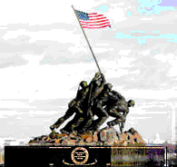

Father
© 1999 Linda Falcone
Once upon a time
In a land not very far away
In a time not very long ago
Lived and died a great man
One of many
A soldier
Noble and brave
Who fought for his country
Who fought for his son
The father of a boy who shared his blood
The father of the many whose blood he bore
These words are a tribute to him
In my father's name
Whose blood I share
As well as the blood of that brave soldier
Whom we can never know
My father and I
But in the glory of his legacy
That breathes forever through our veins
My father's and mine
A day will not pass
Where his love will be forgotten
His love for his country
His country's children and grandchildren
But most of all for his son
Happy Father's Day to my father
And his father before him.
Written by Linda Falcone
Maintained on web site by Rowland Lewis
Last Modified 10/01/2000